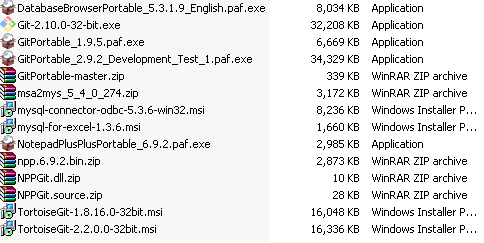

class: center, middle, theBlackBackground # Asas <i class="fa fa-git"></i> <i class="fa fa-code-fork"></i> / <i class="fa fa-github"></i>Github / <i class="fa fa-bitbucket"></i>Bitbucket / <i class="fa fa-gitlab"></i>Gitlab ## Kursus Mudah Selama ... Jam Sahaja --- class: theBlackBackground # Bab Pengenalan : Objektif -- Objektif modul ini adalah -- memberi panduan kepada -- para pembangun laman web -- yang ingin: -- - Menyimpan sejarah fail-fail koding yang dibuat seperti PHP, Java, C/C++ dan sebagainya -- - Pengurusan projek secara berkumpulan dengan pasukan -- - Bersosial/berkongsi dengan rakan-rakan --- class: theBlackBackground # Modul ini merangkumi: -- - Pemasangan <i class="fa fa-git"></i><i class="fa fa-code-fork"></i> -- - Plugin Notepad++ dengan <i class="fa fa-git"></i><i class="fa fa-code-fork"></i> -- - Tortoisegit Portable -- - <i class="fa fa-github"></i>Github -- - <i class="fa fa-bitbucket"></i>Bitbucket -- - <i class="fa fa-gitlab"></i>Gitlab --- class: theBlackBackground # Bab Pengenalan : Keperluan -- Untuk mengikuti panduan ini, -- anda perlu mempunyai asas dan pengalaman -- dalam pembangunan web seperti : -- - Tahu mengunakan google aka tahu keyword yang sesuai. -- - Mempunyai asas dalam -- HTML<i class="fa fa-html5 fa-lg fa-3x"></i>, -- CSS<i class="fa fa-css3 fa-lg fa-3x"></i>, -- dan Javascript. -- - Mempunyai asas pengaturcaraan -- PHP, -- Java, -- C/C++ -- dan sebagainya --- class: center, middle, theBlackBackground # Apa / Mengapa / Bila --- class: theBlackBackground # Apa itu Git -- - Ia adalah satu sistem kawalan versi diedarkan aka DVCS -- - dalam versi sumber terbuka. -- - Ia membolehkan kumpulan orang untuk bekerja -- pada dokumen yang sama, -- pada masa yang sama, -- tanpa memijak kaki masing-masing --- class: theBlackBackground # Mengapa gunakan Git -- 1. Git membolehkan anda menyimpan sejarah perubahan penting yang dibuat kepada fail tempatan anda. -- 1. Ia juga boleh membuat sandaran sejarah ini melalui perkhidmatan hosting terpencil seperti GitHub. --- class: theBlackBackground # Bila masa gunakan Git -- - Membantu anda bekerja bersendirian atau dengan pasukan. -- - Boleh meningkatkan cara kita bekerja dan bekerjasama dalam projek. --- class: theBlackBackground # Muat turun <dir align="center"></dir> --- class: theBlackBackground # Asas dalam git - git init - git status - git add - git commit - git log - git push - git pull - git diff - git reset - git checkout - git branch - git merge --- class: theBlackBackground # git init -- 3.1 Dalam direktori kami mengambil keputusan untuk menamakan "octobox". -- Untuk memulakan repositori Git sini, taip arahan berikut: -- <pre><code> git init </code></pre> --- class: theBlackBackground # git status -- 3.2 Semakan Status -- - Syabas! Git hanya memberitahu kami, -- "octobox" direktori kami kini mempunyai repositori kosong di /.git/. -- - Repositori adalah direktori tersembunyi di mana Git beroperasi. -- - Untuk menyimpan kemajuan anda sebagai anda pergi melalui tutorial ini -- dan mendapat lencana apabila anda berjaya menyiapkannya -- menuju ke buat akaun Kod Sekolah percuma. -- - Kami akan menunggu untuk anda di sini. -- - Seterusnya, mari kita menaip perintah status git untuk melihat apa keadaan semasa projek kami adalah: -- <pre><code>git status</code></pre> --- class: theBlackBackground # git add -- 3.3 Menambah Perubahan -- - Baik, ia kelihatan seperti repositori Git kami berfungsi dengan betul. -- - Perhatikan bagaimana Git berkata octocat.txt adalah "tidak terlacak"? -- - Ini bermakna Git melihat bahawa octocat.txt adalah fail baru. -- - Untuk memberitahu Git untuk mula menjejaki perubahan yang dibuat kepada octocat.txt, -- kita perlu untuk menambahnya ke kawasan pementasan dengan menggunakan git add. -- <pre><code> git add octocat.txt </code></pre> --- class: theBlackBackground # git commit --- class: theBlackBackground # git log --- class: theBlackBackground # git push --- class: theBlackBackground # git pull --- class: theBlackBackground # git diff --- class: theBlackBackground # git reset --- class: theBlackBackground # git checkout --- class: theBlackBackground # git branch --- class: theBlackBackground # git merge --- class: theBlackBackground # SUDAH HABIS DAA - <i class="fa fa-bookmark"></i>: www.amin007.org - <i class="fa fa-envelope-o"></i>: al.amin007@yahoo.com - <i class="fa fa-facebook"></i>: amin007.ledang - <i class="fa fa-twitter"></i>: amin007_ledang - <i class="fa fa-google-plus"></i>: abdulmuhaiminabdulghaniamin007ledang <!-- li><i class="fa fa-linkedin"></i>: </li --> - <i class="fa fa-github"></i>: amin007 - <i class="fa fa-bitbucket"></i>: amin007 - <i class="fa fa-instagram"></i>: aminledang - <i class="fa fa-skype"></i>: amin800507 - <i class="fa fa-youtube"></i>: user/abdmuhaimin - <i class="fa fa-snapchat-ghost"></i>: amin007ledang